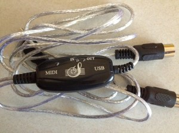
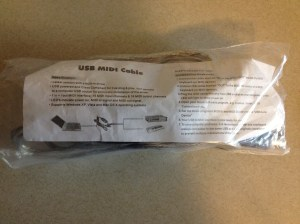
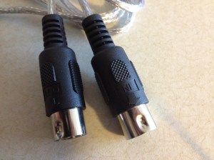
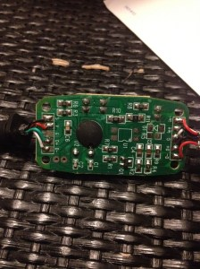
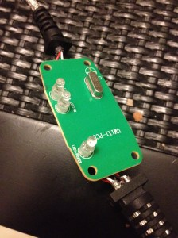

Inexpensive USB MIDI interfaces

Following some of my recent posts, I’m looking into finding inexpensive audio/MIDI ephemera for use with inexpensive audio nodes like the Raspberry PI running Pure Data. Since a PI only costs 35USD or so, it doesn’t make that much sense to have to get a 40USD MIDI interface for it right? Actually, don’t answer this question yet. Even if you have to pay 100USD total for a node, I think we’re still on the winning side of the equation. However, for fun why not say we have a target of 50USD per node including some kind of audio and MIDI interfaces.
In my last post I detailed one possibility for the audio side of the equation, but what about MIDI? There are a flood of cheap USB MIDI cables on Amazon that end up being 5USD or so shipped. The question is, are these things workable for general semi-pro use?
The answer is sort of, and it depends.
The adapters that I got were from Amazon, fulfilled by SANOXY. The reviews are completely mixed, and it seems that there are several different adapters that one might end up with, so I’m going to try my best to be specific about which hardware I actually ended up with so you can figure out if you ended up with the same thing as me (for those of you following along at home).
In addition to having some MIDI capability for my Raspberry PI audio nodes, I’d really like these things to work with my Rock Band keyboard controllers and Behringer FCB1010. In my initial tests, they worked perfectly with the FCB1010 out of the box, and the Rock Band keyboard didn’t detect the MIDI connection so it kept flashing its lights like it was waiting to connect to a PS2 wireless dongle. I also tried my Yamaha CS1x which sent bizarre random note-on data when I moved the mod/pitch wheels or any continuous control knobs. I’m still not sure what the story is with the CS1x but I have mostly figured out what is going on with the Rock Band keyboard.
I’ll save the details of getting the RB keyboard working for a later post, but I’d like to discuss the shortcomings of these MIDI adapters so you can figure out if they will work for your application. The most basic thing that these things are missing is true compliance to the MIDI hardware spec. MIDI defines a balanced current loop communication interface, since we audio types are so paranoid about possible ground loops (and judging by the way some laptop power supplies are designed I’d say this is not unfounded).
The ground/shield on a MIDI connection is only supposed to be connected on one end of the cable and “lifted” on the other. This shield connection is decidedly not intended to be a signal ground/return line. However by my experiments I’ve determined that the SANOXY MIDI cables rely on one end of the balanced signal and the ground wire as the signal return. This ground requirement caused me some initial pain when trying to figure out what was going on with the RB keyboards, as I was getting some active sense messages in MIDIOX when connected, but the keyboard wouldn’t send any note-on messages from the keys. So pins 2 and 4 seem to be used instead of 4 and 5 as shown in the spec.
I’ve also noticed that the interfaces are susceptible to what I’m going to call “framing errors”. That is, if a byte gets missed or corrupted somehow, the interface will not interpret following data properly. What was previously a CC message might end up getting processed as a note-on message or something similar. I haven’t looked at this in significant detail with a scope or analyzer to figure out what exactly is going on, but I’ve observed the adapter getting “stuck” in a state where all data gets received corrupted until I unplug the MIDI input and reconnect it. This seems to sync the serial signal framing up again.
In Linux these adapters identify themselves as the following using lsusb:
Bus 003 Device 002: ID 1a86:752d QinHeng Electronics CH345 MIDI adapter
Here are some other pics to use to ID your device. I haven’t opened one of these up yet, since they are not put together with screws.


Update: I opened one of these up to photograph what is inside. They are typical IC blob PC boards. It does look like there might be a spot on the PC board for an opto-isolator, so it’s possible that these can be hacked for electrical compliance to the MIDI hardware spec. Whether that is worth it is a whole other story though. As noted in the comments below, these adapters don’t support running status messages, which are used by many manufacturers to speed up CC messages. The IC blob means that it’s very tough to reverse engineer these so we basically get what we get.

